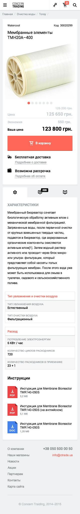
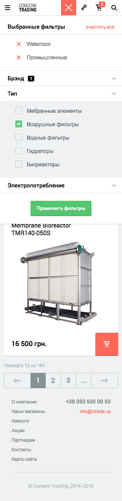

Concern Trading
мобильная версия

Страница товара
На странице товара для мобильных устройств доступен весь функционал и информация с полноценной десктопной версии сайта.

Страница каталога
На странице каталога в поле меню появляется дополнительная кнопка фильтров, позволяющая легко сортировать товары по нужным параметрам.